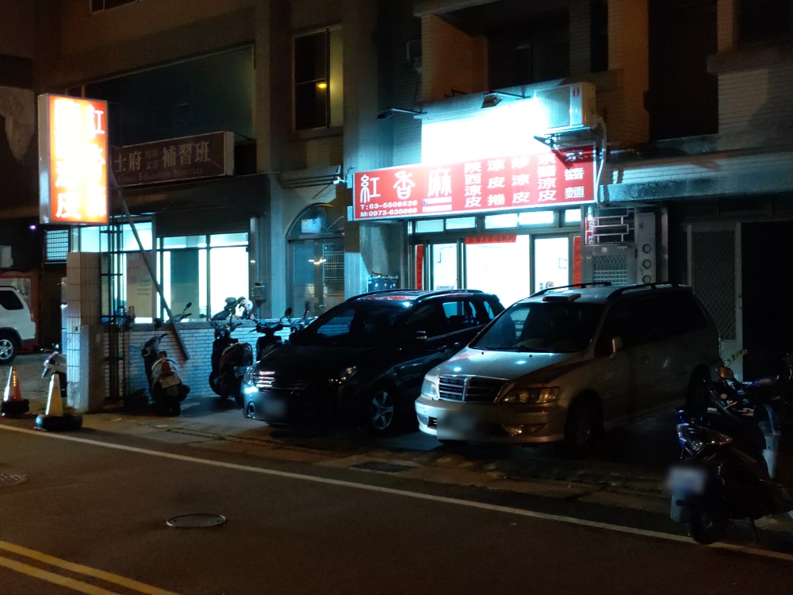
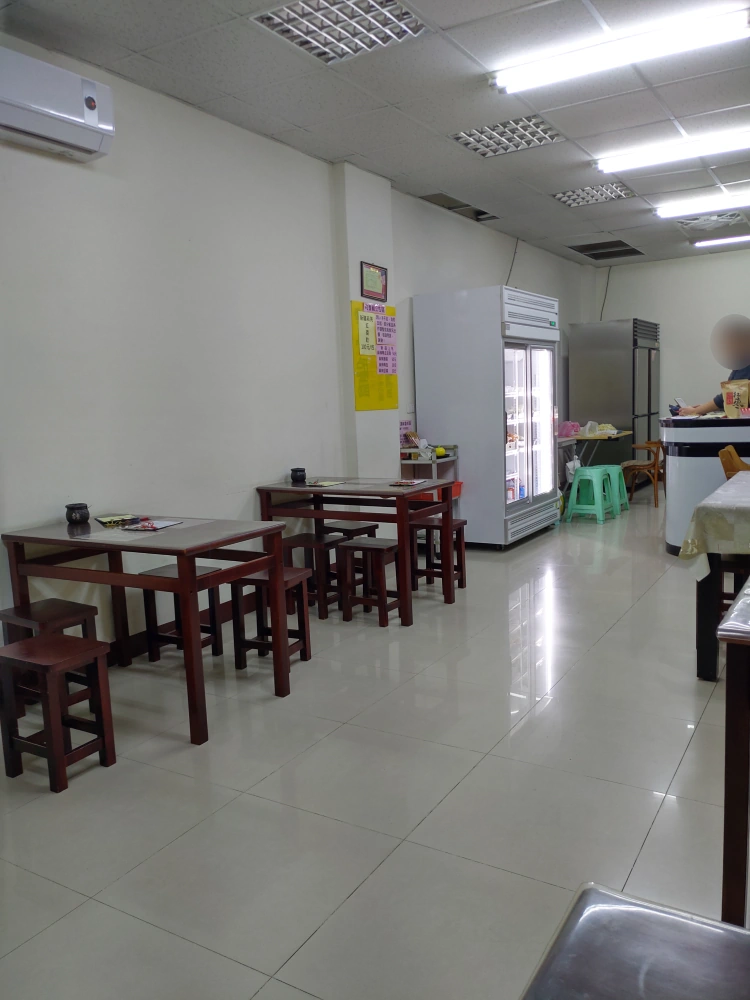
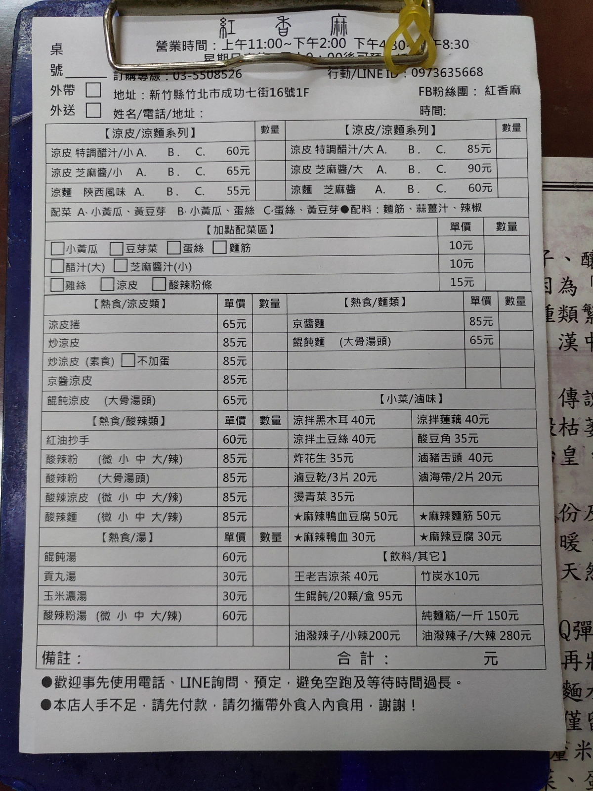
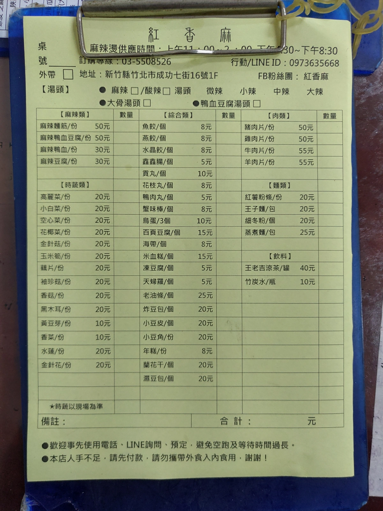
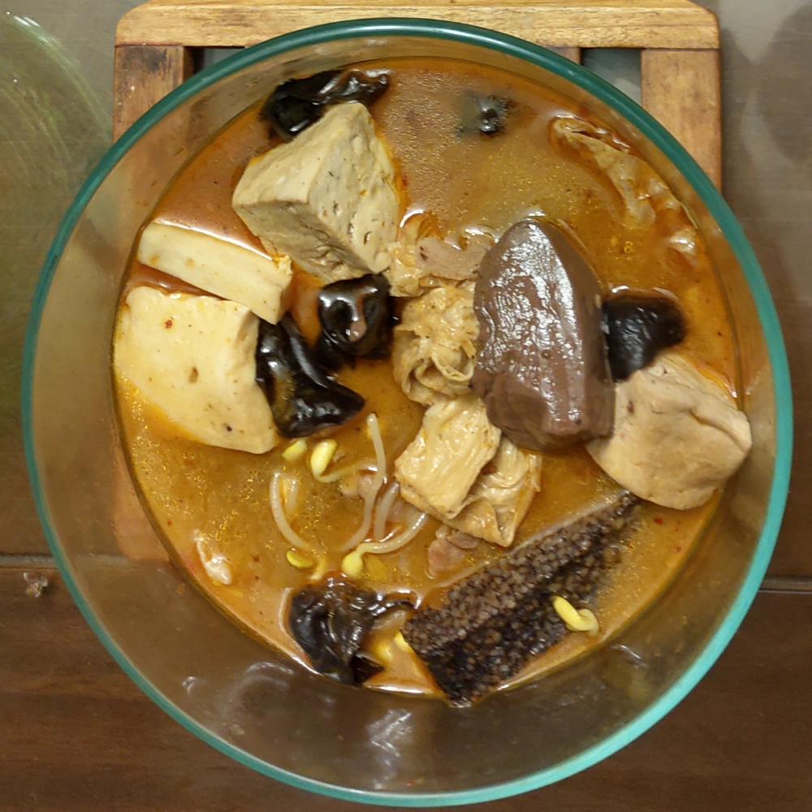
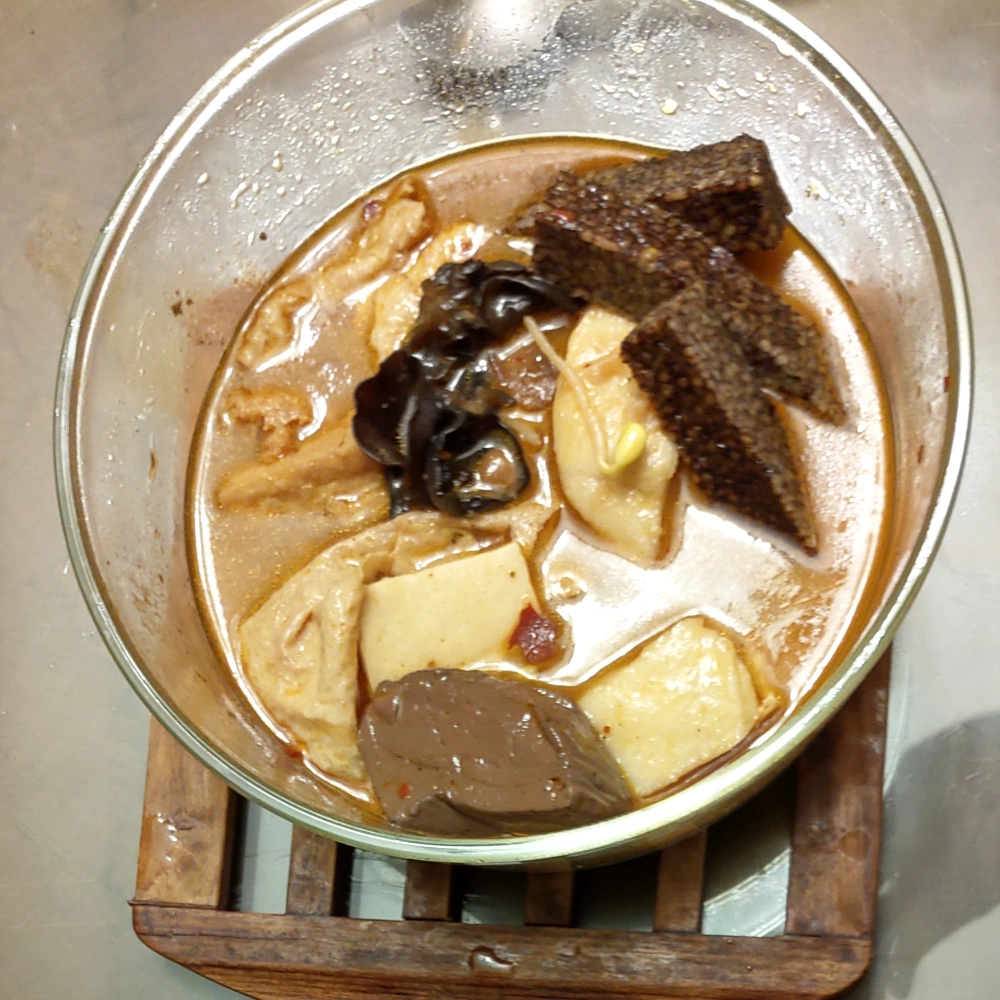

[竹北] 紅香麻
Updated on 2020/Feb/02 - 紅香麻 大幅縮減營業時間了，變成只有 週一到週五營業，也取消晚上時段，嗚嗚嗚… ，以後不能下班後 來買麻辣燙回去加菜了。
| 餐廳名稱: | 紅香麻 |
|---|---|
| 地 址: | 新竹縣竹北市成功七街16號1樓 |
| 營業時間: | 週一至週五 11:00-17:30 |
| 每週六、日 公休 | |
| 電話 : | 0973 635 668 |
這間店是我家附近巷子的小吃店，老闆人很和善，老闆娘有大陸口音，也很客氣，兒子感覺國中或高中了， 所以他們應該在台灣待很久了，言談之中也提到常回大陸。
一開始只有賣陝西涼皮，那個比較適合夏天吃，後來陸陸續續研發出 酸辣粉，跟一些不辣的大陸特色小吃， 最新研發出來的是麻辣燙，口味不錯，外帶內用都合適，一舉變成我的最愛。
某天晚上七點 (注意，營業時間於 2020/Feb 之後 縮減了)，走路去外帶 麻辣燙 回家加菜。這條巷子 晚上人不多，除了一兩間補習班以外。 
店內裝潢還蠻乾淨的，大致上都是附近住戶來用餐，特別是附近大陸新娘，會來吃這些陝西料理，以解鄉愁。 
這是菜單，可以看到 涼皮、酸辣粉， 涼拌黑木耳，涼拌土豆絲等陝西美食。 
最新開發出來的麻辣燙菜單。如果選了 麻辣鴨血豆腐湯頭，就無法選辣度，只能接受鴨血豆腐湯頭調好的辣度。
麻辣鴨血豆腐 通常是另外一碗，麻辣燙再一碗，如果沒要求，兩種不會放在一起。 曾經看到客人覺得奇怪，麻辣燙 沒有普通的板豆腐可以選，詢問老版後才知道。 
今天不知不覺勾了很多樣，本來以為一個 1500cc 的玻璃保鮮盒就夠了，沒想到需要用到第二個 1500cc 玻璃保鮮盒， 還好今天多帶一些玻璃保鮮盒。
大概有一份 麻辣鴨血，加 黃豆芽、黑木耳、米血糕、豆皮、豬肉片 等。 首先，它的湯頭熬的不錯， 所以要挑一些比較能吸附湯汁的，像是豆皮、蘭花干 這種東西會比較好吃，像甜不辣這種比較難吸湯的，跟麻辣湯頭就稍微不合一點。 整個算是一個好吃的小型麻辣火鍋。  
大陸常見的 麻辣燙，其實可以想成是 麻辣火鍋，一般家裡比較難準備麻辣湯頭，可以來這邊外帶麻辣燙，回去再自己加料， 所以我都沒在這裡點過魚餃。 我家裡就有昂貴的三記魚餃、蝦餃了。
改天要來實驗外帶中辣或大辣的麻辣燙，回家再加水把湯變的多一點，再加上自己的三記魚餃、蝦餃，Costco牛肉火鍋肉片， 看看這樣是不是能弄個超棒的麻辣火鍋。